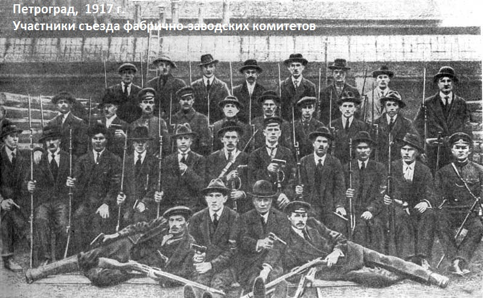

О ЗАДАЧАХ
КОММУНИСТОВ В НОВОРОССИИ

В условиях вооружённой борьбы с американским фашизмом в Новороссии большие массы людей оказались втянуты в политику. Ещё раз подтвердилось известное высказывание: Если вы не занимаетесь политикой, то политика займется вами.
Коммунисты должны разъяснять трудящимся, в первую очередь — рабочим, их коренные классовые интересы, помогать организоваться для осуществления этих интересов, в то же время отдавая себе отчет в том, что без помощи российского буржуазного государства борьба с фашизмом на Украине резко осложнится.
На предприятиях Новороссии имеются условия для становления органов рабочего контроля, аналогичных фабрично-заводским комитетам 1917–1918 гг. Такие органы могли бы пресекать попытки собственников и администрации саботировать организацию производства, разбазаривать сырьё и материалы. Они могли бы контролировать вопросы приема на работу и увольнений, заработной платы, рабочего времени. Органы рабочего самоуправления смогли бы обеспечить набор в рабочую милицию для оказания помощи правоохранительным органам Новороссии в борьбе с преступностью, а при необходимости — и участия в боевых действиях наряду с ополчением. Рабочая милиция послужила бы надежной гарантией нейтрализации криминальных попыток противодействия становлению рабочего контроля на основе создания Советов рабочих депутатов.
Российская буржуазия, раздираемая противоречиями и связанная многими узами с США и Западной Европой, непоследовательна в борьбе за полное освобождение Украины от американского фашизма. Тем более, вряд ли она сможет организовать должным образом современное производство, общественную жизнь в Новороссии.
Чтобы возрождение Советской власти, возрождение социализма — и не только в Новороссии — стало реальностью, коммунистам уже сейчас следует прилагать все усилия для организации рабочего класса.
Идеологическая комиссия
ЦК Рабочей партии России |